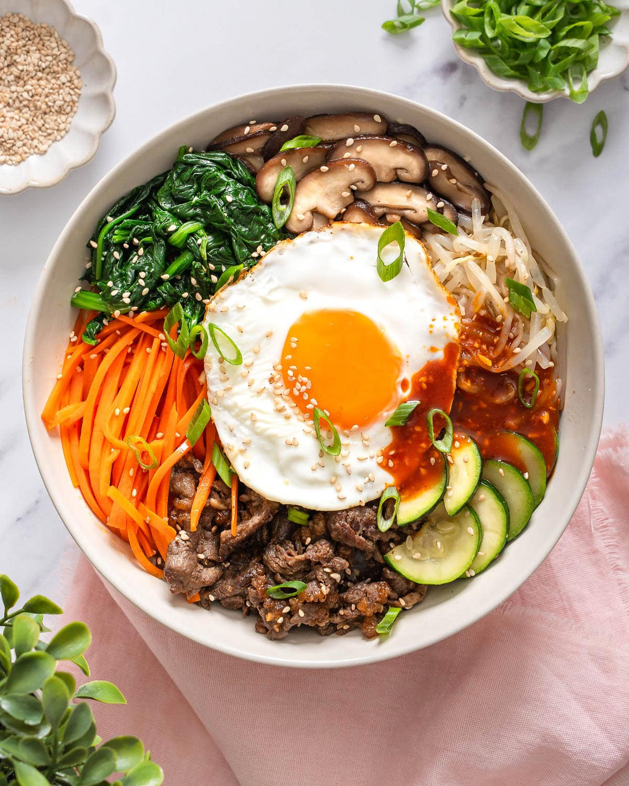

Bibimbap

What is Bibimbap?
Bibimbap is a rice bowl topped with all sorts of seasoned sautéed vegetables, marinated meat (usually beef), a fried egg sunny side up, finished with a sprinkle of sesame and generous dollop of a sweet-spicy-savoury Bibimbap sauce.
Ingredients
- 1 cucumber, cut into matchsticks
- 1/4 cup gochujang
- 1 bunch spinach, cut into thin strips
- 1 tablespoon soy sauce
- 2 teaspoons olive oil
- 2 carrots, cut into matchsticks
- 1 clove garlic, minced
- 1 pinch red pepper flakes
- 1 pound thinly-sliced beef top round steak
- 4 large eggs
- 4 cups cooked white rice
- 4 teaspoons toasted sesame oil
- 1 teaspoon sesame seeds
Steps
- Stir cucumber pieces and gochujang paste together in a bowl;set aside.
- Bring about 2 cups water to a boil in a large nonstick skillet and stir in spinach; cook until bright green and wilted, 2 to 3 minutes.
- Drain spinach and squeeze out as much moisture as possible;set spinach aside in a bowl and stir in soy sauce
- Heat 1 teaspoon olive oil in a large nonstick skillet; cook and stir carrots until softened, about 3 minutes.
- Stir in garlic and cook just until fragrant, about 1 minute. Stir in cucumber mixture; sprinkle with red pepper flakes. Set carrot mixture aside in a bowl
- Brown beef in a clean nonstick skillet over medium heat, about 5 minutes per side; set aside.
- Heat remaining 1 teaspoon olive oil in another nonstick skillet over medium-low heat. Fry eggs just on one side until yolks are runny, but whites are firm, 2 to 4 minutes.
- Divide cooked rice into 4 large serving bowls; top with spinach mixture, a few pieces of beef, and cucumber mixture. Place 1 egg atop each serving. Drizzle each bowl with 1 teaspoon sesame oil, a sprinkle of sesame seeds, and a small amount of gochujang paste if desired.
Home